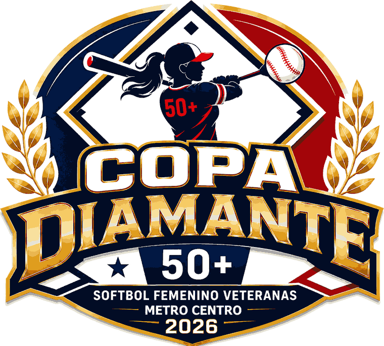
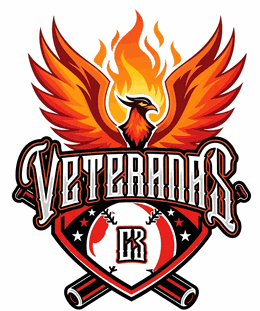
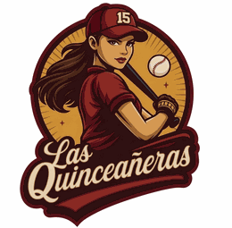
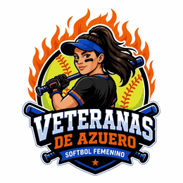
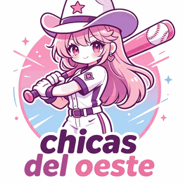
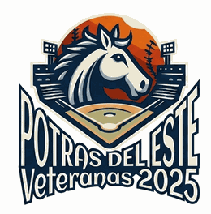
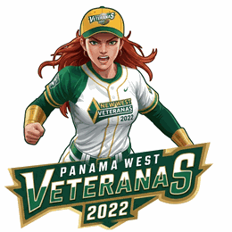
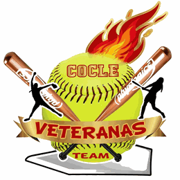
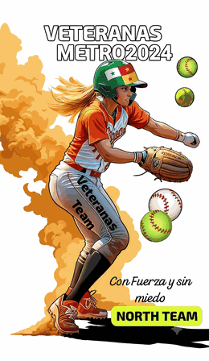

Revolution Softball Team · Veteranas Metro Centro
Sábado 19 y domingo 20 de septiembre de 2026
Cuadro Los Andes N.° 1 · Complejo Los Andes N.° 2
Quiénes juegan








Cada equipo juega tres partidos de ronda regular. Los dos mejores disputan el campeonato.
Resultados, posiciones y líderes — al cierre de cada jornada
Calendario oficial
El primer equipo de cada juego es el visitante. Horarios sujetos al desarrollo de la jornada.
Jornada 1 · sábado 19 de septiembre
Complejo Los Andes N.° 2. Cada equipo lleva dos de sus tres juegos.
| Equipo | G | P | AF | EC | Dif. | |
|---|---|---|---|---|---|---|
| 1 | Veteranas Metro Norte | 2 | 0 | 23 | 5 | +18 |
| 2 | Potras del Este | 2 | 0 | 20 | 5 | +15 |
| 3 | Veteranas Coclé | 1 | 1 | 15 | 16 | −1 |
| 4 | New West Veteranas | 0 | 2 | 8 | 16 | −8 |
| 5 | Metro Centro B | 0 | 2 | 3 | 27 | −24 |
AF: carreras a favor · EC: carreras en contra. Los juegos del Cuadro Los Andes N.° 1 se publican al confirmarse.
Al corte de la jornada 1
| Evelyn FloresMetro Centro B · 2 juegos | 1.000 4-4 |
| Migdalia De RomeroNew West · 2 juegos | 1.000 4-4 |
| Nidia SamaniegoVeteranas Coclé · 2 juegos | 1.000 4-4 |
| Rosa ChávezPotras del Este · 2 juegos | .800 4-5 |
| Tete SomaMetro Norte · 2 juegos | .800 4-5 |
| Jessica OsorioMetro Norte · 2 juegos | .800 4-5 |
| Rosa ChávezPotras del Este · 2 juegos | 7 |
| Migdalia De RomeroNew West · 2 juegos | 4 |
| Nuris Del RosarioVeteranas Coclé · 2 juegos | 4 |
| Yara MonteroMetro Norte · 2 juegos | 4 |
| Yamilka PachecoMetro Norte · 1 juego | 4 |
| Evelyn FloresMetro Centro B · 2 juegos | 3 |
| Rosa ChávezPotras del Este | 2 |
| Evelyn FloresMetro Centro B | 1 |
| Migdalia De RomeroNew West | 1 |
| Nuris Del RosarioVeteranas Coclé | 1 |
| Laura QuinteroMetro Norte | 1 |
| Yamilka PachecoMetro Norte | 1 |
| María CastroVeteranas Coclé · 5.0 entradas | 1 |
| Mixie UrrutiaPotras del Este · 5.0 entradas | 1 |
| Elsa RosalesPotras del Este · 4.0 entradas | 1 |
| Iveth UrriolaMetro Norte · 4.0 entradas · 4 K | 1 |